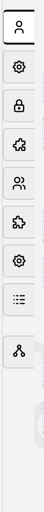
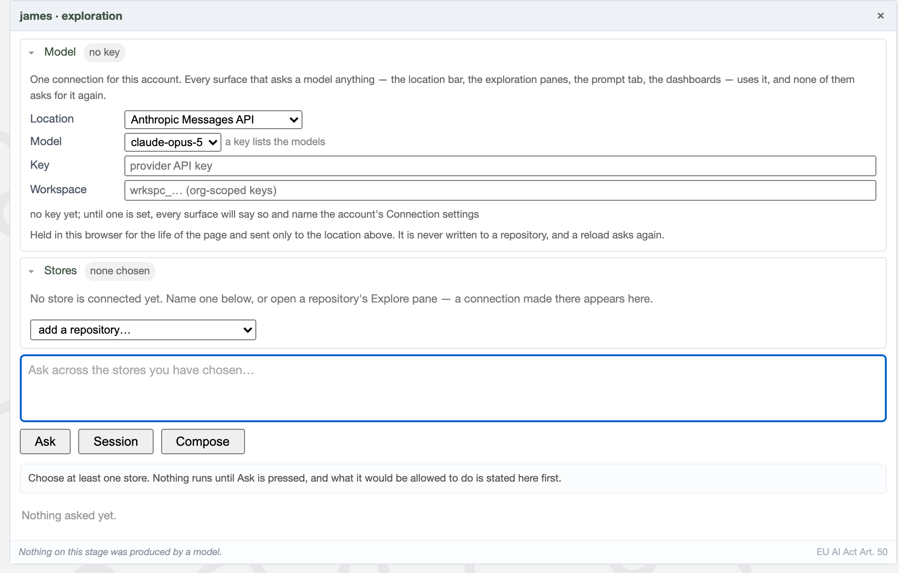
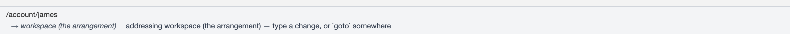
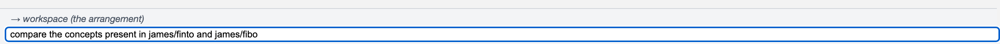
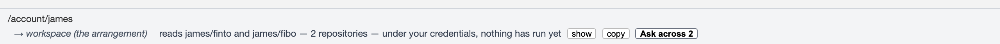
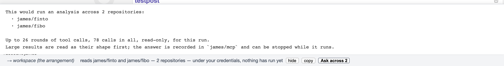

Overview
One question, several repositories, one answer. The interface tells you what it would read before it reads anything, and one press authorises the run. A model chooses every query; it holds no credential and has no way to write.
Two routes lead in, and they do the same thing:
- The exploration pane — a tab at the foot of your account page's left margin, marked with the triple. Choose the repositories from a list, type the question, and read the answer in the pane. This is the one to use when the answer is long, when you want the transcript beside it, or when you want to draw from what came back.
- The location bar — type the question into the one control on the screen before you have opened anything, naming the repositories in the line itself. Quicker, and the answer folds out under the bar.
Both run the same analysis under the same budget and record it in the same place. This page covers the exploration pane first and the location bar after it.
Before You Start

The Exploration Pane
The left margin of your account page is a strip of icons. The last one, set apart below the rest, is the triple — three nodes and the edges between them. Press it.


Step 1 — Find the Location Bar
The location bar is the last band of the chrome, and every page carries it. On a long page it sits below the fold, so scroll to the bottom.

/account/james — and, to start with, nothing else. It addresses
nothing yet.Step 2 — Address the Workspace
The bar routes what you type to whatever it addresses. A path still navigates, as it always did. Anything else is an instruction, and an instruction needs a destination — so point the bar at the workspace first:
goto workspace
goto something first, or click into
it". Most people miss this step, because the bar looks ready before it is.
Step 3 — Ask, Naming the Repositories
Type the question. Name in it the repositories it is about — the workspace itself knows none, and a question with nothing to read does not run.
compare the concepts present in james/finto and james/fibo
Three ways name a repository, and one line may mix them:
| Written as | Example | Notes |
|---|---|---|
| Qualified | james/finto |
Anywhere in the line, as a whole word. |
| A link or a path | https://dydra.com/james/finto/account/james/repositories/finto |
Paste either — what the address bar shows is as good as a URL. |
| A bare name after a cue | across finto, fibo and bob/parts |
The cue words are in, into, from, against, across, on, over,
within, about, of. A list stays open across a comma or
and, and closes at anything else — so a cue cannot
reach across a whole sentence. |
Step 4 — Read What the Press Authorises, Then Press
Press Enter and nothing runs. The bar answers with what it would read, and offers one button: Ask. The detail above it already names every repository the press would reach, line by line, so the button itself stays plain.

Press show for the rest of it. This is the grant, in the terms the run itself holds:

mcp
repository, and that you may stop it while it runs.The budget grows with the number of stores: six rounds plus ten for each repository, to a ceiling of forty, and three calls per round. Two repositories give 26 rounds and 78 calls; one gives 16 and 48.
Step 5 — The Answer
The answer appears under the bar. Read it there, or copy it. It ends with a
line the interface writes, not the model: the model as served — which
is not always the one you asked for — how many calls each repository took, the
date, and, where the exploration used up its rounds, that it stopped at the
limit. Below that sit the links to the record, one per repository, in
your-account/mcp.
doc/analysis-live/ keeps four
complete runs of this question — every turn, every call, and the report each
produced — including one where the round budget ran out and the model wrote the
report anyway.
If It Refuses
| What it says | What to do |
|---|---|
nothing is addressed — goto something first, or click into it |
Step 2. Type goto workspace. |
| It names your account's Connection settings | No key is set. See Before you start. |
| the workspace names no repository, so there is nothing to read | Your line named none the bar could recognise. Name one as
account/repository, or after a cue word. |
| One sentence about each name it could not read | You named a repository this account may not read. The bar refuses the whole line, not just that name — answering the readable half would answer a question you did not ask, about one store when you named two, and would not say so. |
| sign in before rearranging the interface | Your session has lapsed. Sign in again. |
What the Interface Hands the Model, and What It Does Not
- One tool per repository you named, and nothing else. The model cannot reach a repository you did not name, whether or not you may read it.
- The read-only operation set. Nothing it can call writes.
- No credential. The interface carries every call under your token.
- A budget, stated: it knows how many rounds it holds, and the prompt asks it to leave itself one to write in.